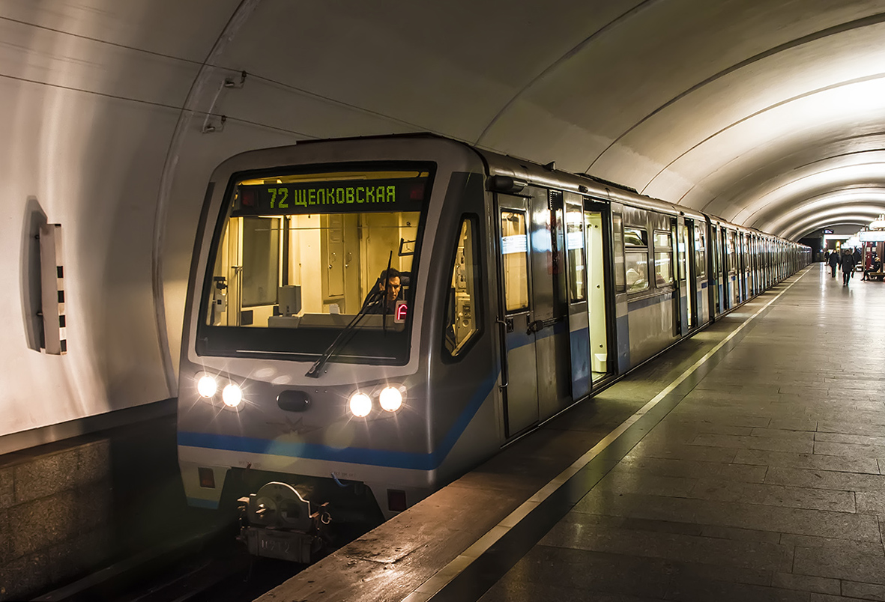

| • 81-740/741 «Русич» | |
|  | Первая опытно-промышленная серия, оборудованная асинхронным приводом производства Alstom. Головные секции имеют по 24 сидячих места, промежуточные — по 30 (всего 54 места в головном и 60 в промежуточном вагоне соответственно). Производились в 2002—2004 годах, выпущено 27 головных и 13 промежуточных вагонов, сформированных в 13 трёхвагонных составов, дополнительный головной вагон используется как тренажёр. Вагоны этого типа обслуживают Бутовскую линию. Самый первый опытный состав не эксплуатируется. |
| • 81-740.1/741.1 «Русич» | |
 |
Отличаются от 81-740/741 асинхронным приводом производства ОАО «Метровагонмаш», компоновка салона изменений практически не претерпела. В 2004 году выпущен опытный трёхвагонный состав, с 2005 по 2009 годы для Москвы выпущено 160 головных и 220 промежуточных вагонов серийной модели 81-740.1/741.1, сформированных в 81 состав. Один из серийных составов, использованный в качестве именного поезда-галереи, «Акварель», имеет конструктивные отличия в виде отсутствия части сидений и окон напротив них. Опытный трёхвагонный состав 81-740А/741А обслуживает Бутовскую линию, серийные составы 81-740.1/741.1 обслуживают Сокольническую, Арбатско-Покровскую и Бутовскую линии. С 2005 по 2019 годы составы 81-740.1/741.1 эксплуатировались на Филёвской линии. |
| • 81-740.1/741.1 «Акварель» | |
 |
Поезд-галерея с репродукциями картин, созданный по инициативе Сергея Андрияки. Первая подборка картин была посвящена творчеству художника-инициатора и учеников его школы. Все пять вагонов состава снаружи оклеены цветной плёнкой с изображениями цветов, фруктов, рек, деревьев. По сравнению с обычными вагонами типа 81-740.1/741.1 «Русич», отсутствуют окна и сиденья с одной из сторон, на их месте расположены картины, над которыми добавлено освещение. Каждый вагон имеет свою цветовую гамму — уникальны как оклейка с внешней стороны, так и цвет пола, стен и сидений в вагоне. В январе 2013 года плёнка, которой был оклеен поезд снаружи, заменена на новую — с немного другой расцветкой. Приписан к ТЧ-3 «Измайлово» и эксплуатируется на Арбатско-Покровской линии. |
| • 81-740.4/741.4 «Русич» | |
 |
В отличие от 81-740.1/741.1, вагоны имеют три двери в промежуточных секциях с каждой стороны (по пять дверей у головных вагонов и шесть у промежуточных), оборудованы системами кондиционирования и видеонаблюдения в салоне. Планировка сидячих мест в промежуточных секциях была изменена, их число уменьшилось до 22 в задней и до 20 в передней промежуточной секции, общее число мест в головном вагоне составляет 46, а в промежуточном — 42. Выпускались в 2008—2013 годах, в Москву поставлено 132 головных и 178 промежуточных вагонов, сформированных в 66 составов, эксплуатируемых с пассажирами с 2009 года. Вагоны этого типа обслуживают Арбатско-Покровскую и Бутовскую линии. Эксплуатируется 65 составов (один состав потерпел крушение, в результате которого один головной и один промежуточный вагоны были списаны и порезаны, остальные три вагона из состава сняты с эксплуатации). |
сделали Лядов Тимофей и Никитин Станислав